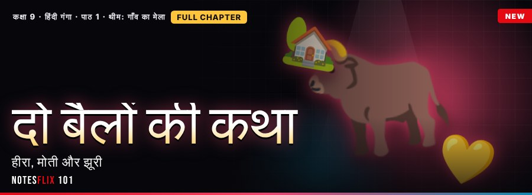
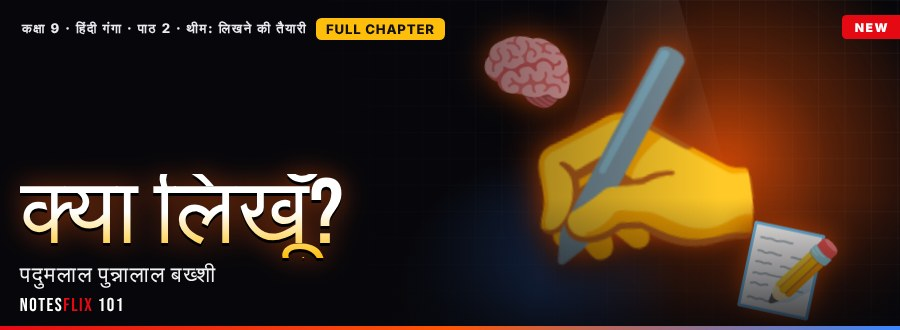
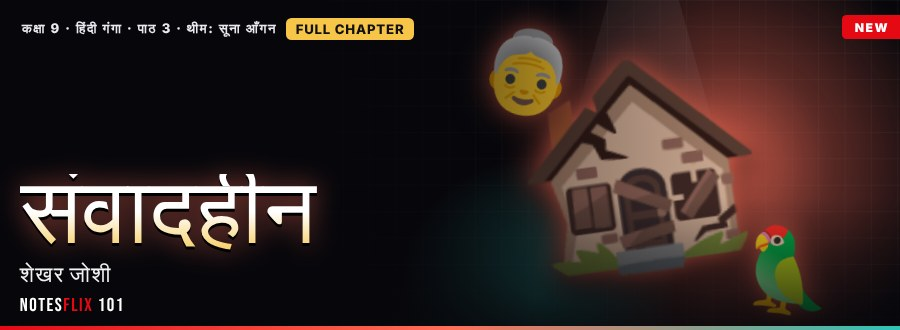
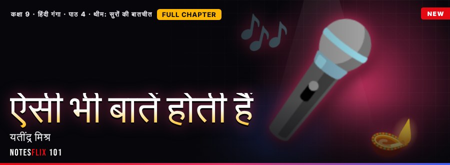
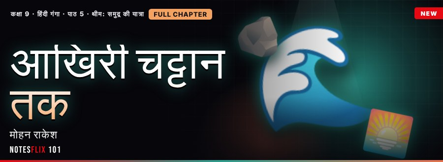

Class 9 Hindi (Ganga) Notes
Interactive CBSE Class 9 Hindi (Ganga) notes by Vishal Sir, C&S Classes. They follow the new NCERT Hindi textbook Ganga (2026-27). Each chapter is broken into short parts with easy explanations, picture stories, flash cards, quizzes and board-style exam questions with model answers. 5 of 10 parts are free to read with no password (Part 1 of every chapter). The other parts open with a password from Vishal Sir.
Chapters

Unit 1: दो बैलों की कथा
प्रेमचंद की कहानी: हीरा और मोती की मित्रता, स्वाभिमान और अपनेपन की यात्रा।
- मेले का बैलFREE — प्रेमचंद की कहानी दो बैलों की कथा: पात्र, बिछड़ने का दुख, साहस और संदेश। (35 min)
- शब्दों का भंडारPASSWORD — पर्यायवाची और विलोम शब्द, मुहावरे और गुणवाचक विशेषण: भाषा-बोध का अभ्यास। (35 min)

Unit 2: क्या लिखूँ?
पदुमलाल पुन्नालाल बख्शी का निबंध: विषय चुनना, तैयारी करना और विचारों को क्रम में रखना।
- विचारों की खोजFREE — क्या लिखूँ? निबंध की प्रक्रिया: विषय, तैयारी, विचारों का क्रम और लेखन। (35 min)
- विराम और वाक्यPASSWORD — विराम-चिह्न, सरल, संयुक्त और मिश्र वाक्य, और अनुच्छेद बनाने का नियम। (35 min)

Unit 3: संवादहीन
शेखर जोशी की कहानी: सूने घर, ताई के अकेलेपन और बातचीत की ज़रूरत की कथा।
- सूना आँगनFREE — संवादहीन: सूना घर, ताई का अकेलापन, मिट्ठू तोते का साथ और संवाद का संदेश। (35 min)
- नाम और उसकी जगहPASSWORD — संज्ञा के तीन प्रकार, सर्वनाम के रूप और वाक्य में उनका सही मेल। (35 min)

Unit 4: ऐसी भी बातें होती हैं
यतींद्र मिश्र का लता मंगेशकर से साक्षात्कार: बचपन, संगीत की साधना और स्वाभिमान की सीख।
- सुरों की बातचीतFREE — साक्षात्कार का रूप, संगीत की साधना, पिता से मिले संस्कार और स्वाभिमान की सीख। (35 min)
- काम और उसका ढंगPASSWORD — क्रिया की पहचान, क्रिया-विशेषण के रीति, काल और स्थान प्रकार, और उनका वाक्य में प्रयोग। (35 min)

Unit 5: आखिरी चट्टान तक
मोहन राकेश का यात्रा-वृत्तांत: कन्याकुमारी के सागर, सूर्यास्त और आत्मचिंतन की यात्रा।
- सागर का मिलनFREE — यात्रा-वृत्तांत का रूप, कन्याकुमारी के सागर और चट्टानें, सूर्यास्त और आत्मचिंतन। (35 min)
- एक और अनेकPASSWORD — वचन के दो भेद, लिंग के दो भेद, और क्रिया तथा विशेषण का मेल। (35 min)
Frequently asked questions
Are the Class 9 Hindi (Ganga) notes free?
5 of 10 parts are free to read with no password (Part 1 of every chapter). The other parts open with a password from Vishal Sir.
Which syllabus do these Class 9 Hindi (Ganga) notes follow?
They follow the new NCERT Hindi textbook Ganga (2026-27). Every chapter is split into short interactive parts with simple explanations, flash cards, quizzes and board-style exam questions with model answers.
How many chapters are covered?
5 chapters: दो बैलों की कथा; क्या लिखूँ?; संवादहीन; ऐसी भी बातें होती हैं; आखिरी चट्टान तक.
Is there a practice test for Class 9 Hindi (Ganga)?
Yes. The Class 9 Hindi (Ganga) Practice Marathon has 254 multiple-choice questions taken from the notes: a weekly marathon (30 questions, 20 minutes, the same set for everyone that week), a 10-question sprint, a 100-question mega marathon and chapter practice. A free sample is open to all; the full bank opens with the subject password.
How do I get the password for locked notes?
Message Vishal Sir of C&S Classes on WhatsApp from the Notesflix 101 website. The same password opens every locked Hindi (Ganga) note.